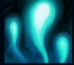
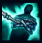
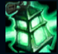
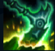
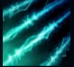

Thresh
| Thresh The Chain Warden | |
|---|---|
| Release date | 23.01.2013 |
| Class | Catcher |
| Positions | Support |
| Resource | Mana |
| Range type | Ranged |
| Adaptive type | Magic |
| Base statistics | |||
| Health | 561+93 | Mana | 273.92+44 |
| Health regen. | 7+0.55 |
Mana regen. | 6+0.8 |
| Armor | 28+0 | Attack damage | 56+2.2 |
| Magic resist. | 30+0.5 | Crit. damage | 175% |
| Move. speed | 335 | Attack range | 450 |
Thresh este un spirit sadic, viclean și înverșunat din Insulele Umbrelor. Pe când era paznicul a nenumărate secrete oculte, a fost mistuit de o putere mai presus de viață și de moarte; acum, își petrece timpul schingiuindu-și și torturându-și lent victimele. Acestea suferă nu numai pe timpul vieții lor efemere: Thresh le întemnițează sufletele în felinarul său, chinuindu-le pe vecie. |  |
DAMNARE Thresh poate strânge sufletele adversarilor care mor în apropierea sa, primind astfel armură și puterea abilităților. |
||
|---|---|---|---|---|
 |
CONDAMNARE LA MOARTE Thresh leagă cu lanțuri un inamic și îl trage spre el. A doua activare a acestei abilități îl trage pe Thresh spre inamic. |
|||
 |
CALEA ÎNTUNECATĂ Thresh aruncă un felinar care protejează campionii aliați din apropiere împotriva daunelor. Aliații pot da clic pe felinar pentru a ajunge la Thresh. |
|||
|  |
TORTURĂ Atacurile lui Thresh se încarcă, provocând cu atât mai multe daune cu cât așteaptă mai mult între atacuri. Când este activată abilitatea, Thresh își aruncă lanțul, aruncând toți inamicii din calea lui în direcția loviturii. |
|||
 |
ÎNCHISOAREA O închisoare de ziduri care încetinesc inamicii și le provoacă daune dacă sunt dărâmate. |